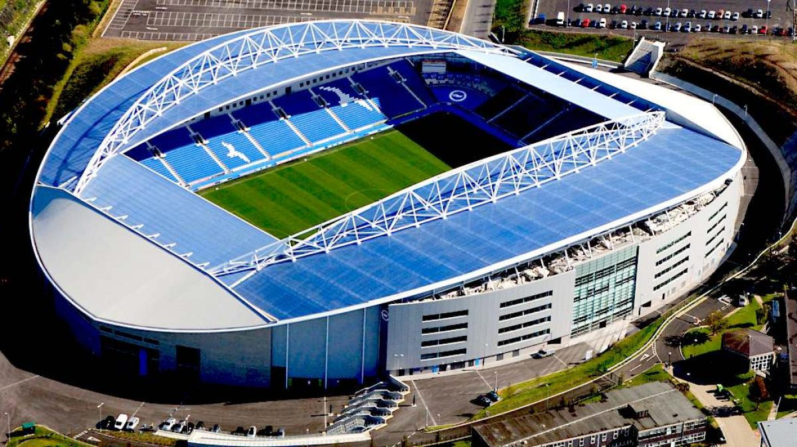

Treinador: Fabian Hürzeler
Fabian Hürzeler é um jovem e promissor treinador de futebol alemão que se tornou o treinador mais jovem da história da Premier League. Nascido nos EUA, mas criado na Alemanha, teve uma modesta carreira como médio, principalmente nas divisões inferiores do futebol alemão, incluindo passagens pelas camadas jovens do Bayern de Munique.

Estádio: Amex Stadium
Após 14 anos sem casa própria, a inauguração do Amex em 2011 deu ao clube um lar permanente e moderno. O momento crucial da sua história ocorreu em 2017, quando o estádio celebrou a promoção do Brighton para a Premier League, marcando o regresso do clube à primeira divisão após 34 anos e solidificando o Amex como um palco de futebol de elite.

Estilo de Jogo:
O estilo de jogo de Fabian Hürzeler é caracterizado por uma abordagem tática inovadora que privilegia a intensidade, a coragem e a posse de bola orientada para o ataque, com variações táticas que surpreendem os adversários.
"We Are Brighton!"